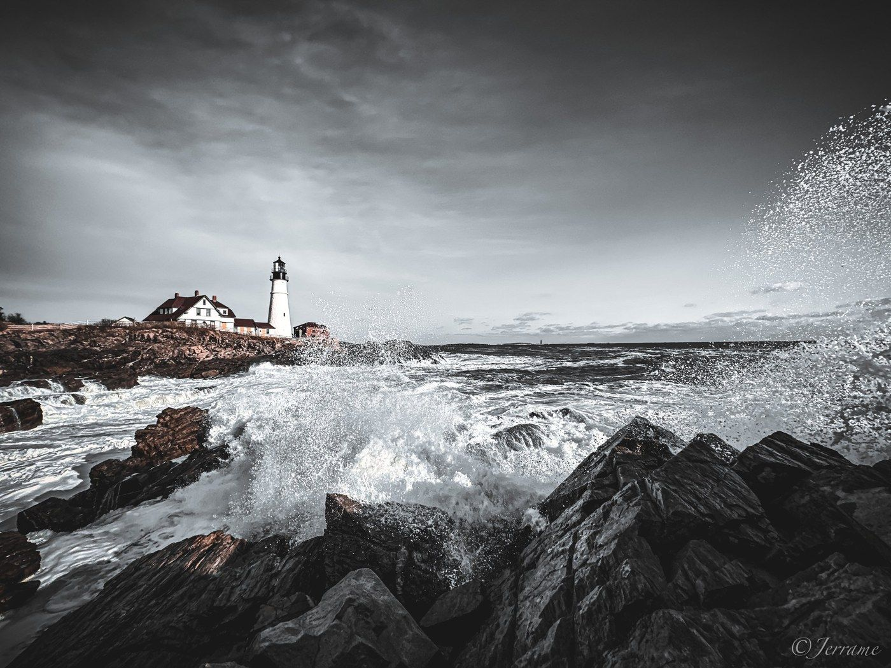
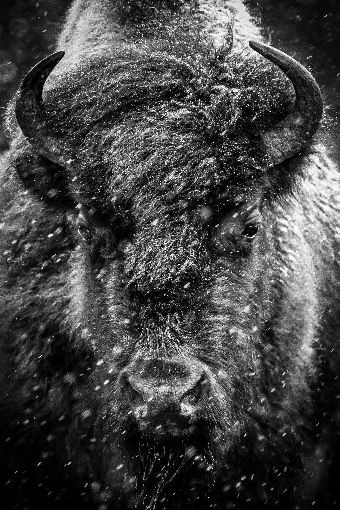

Weddings & engagements
Full-day coverage, engagement sessions, and intimate elopements, documented as they happen.
Wedding, engagement, family, senior, and editorial portrait photography, shaped by twenty-five years spent chasing sunrises, storms, and the New Hampshire landscape in between.
See the workSOUTHERN NEW HAMPSHIRE & BEYOND
THE WORK BEHIND THE WORK
Twenty-five years chasing sunrises, storms, and still winter mornings shaped how I shoot weddings and portraits too: the patience for light, the instinct for a moment that won't come back twice.


Full-day coverage, engagement sessions, and intimate elopements, documented as they happen.
On-location sessions timed to golden hour, for families, seniors, and the people who matter to you.
Twenty-five years behind the camera, one dad joke at a time.
LET’S WORK TOGETHER
Tell us what you're planning, your timing, and what matters most to you. We'll start with a conversation.
Start a conversationServing Southern New Hampshire
through the Lakes Region.